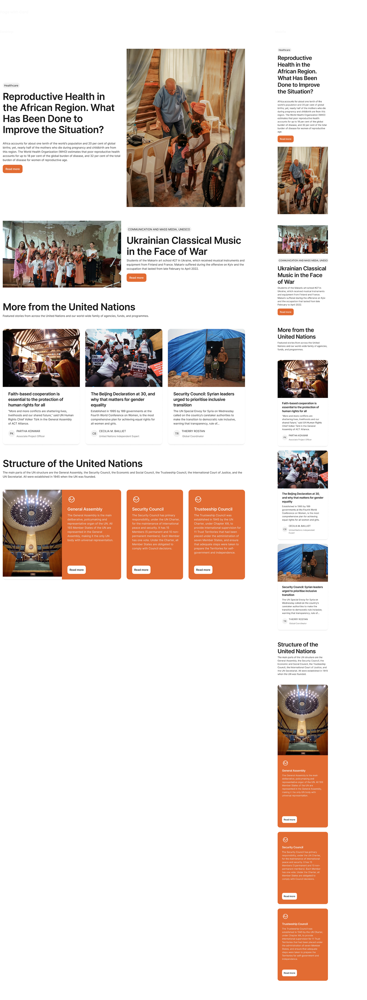

How I kickstarted a design project with Atomic Design
Role: UX Designer
Time: 2022 / 2023

Building a design system, to me, is like crafting wooden furniture. To create something both functional and beautiful, I must first focus on the foundation. A strong foundation leads to a strong product. When every piece is carefully measured, accounted for, and thoughtfully assembled, the result is efficient and seamless. Without this precision, more time and effort will be wasted fixing inconsistencies later.
Overview
Established a structured, Atomic Design-based system to unify UI components, improve collaboration, and enable scalable, consistent design from the start. Standardixed design element, optimized workflows, and ensured seamless developer handoff.
Key outcomes
- Improved design consistency and efficiency, reducing redandant components and streamlining UI updates
- Accelerated design and development workflows, cutting production time and improving collaboration
- Validated system adoption through team training and integration into multiple projects
- Established a scalable, maintainable design system, ensuring long-term flexibility and growth
- Created a living documentation framework, aligning design and development teams for future scalability
Table Of Content
- Introduction
- Process
- Phase 1. Design Tokens
- Phase 2. Atoms (Building blocks)
- Phase 3. Molecules (Component structure)
- Phase 4. Organisms (Modular Design)
- Phase 5. Templates
- Phase 6. Pages (Interface implementation)
- Phase 7. Documentation and Govenance
- Results
- Takeaways
Introduction
In my experience as a UX designer working on various projects, I've found that the strategic implementation of a well-defined design system is paramount to the success of any digital product. It's not merely about aesthetics; it's about establishing a robust framework that drives efficiency, scalability, and a unified user experience. Let's explore how I approach this critical phase.
The strategic framework
When initiating a design project, I prioritize establishing a cohesive design language from the outset. This proactive approach mitigates design debt, fosters cross-functional alignment, and ensures the product's long-term viability. I leverage Atomic Design as a foundational methodology, recognizing its ability to create a modular and scalable system.

The process
My process for implementing Atomic Design is systematic and focused on creating a clear hierarchy of design elements.
Phase 1. Design Tokens
This phase involves identifying and defining the fundamental visual elements. This includes establishing a consistent color palette, a readable typographic system, and a standardized spacing and grid structure. These elements form the base of the design system.
#1 - Create Design Tokens categories
- Color - Define a color palette as design base (Primitive), and create Semantic mappings for specific contexts.
- Typography - Define font-related properties like font family, sizes, weights, line heights, and letter spacing as tokens.
- Spacing - Define consistent spacing values for padding, margins, and gaps.
- Breakpoints - Define breakpoints for different screen sizes that help maintain consistency across various screen sizes.
- Border - Define border-radius values for rounded corners.
- Shadow - Define consistent shadow values for elevation and depth.
Also, ensure the design system is adaptable to different themes (light and dark modes), without needing to rebuild components from scratch.
 Color - Primitive
Color - Primitive Border
Border#2 - Assign semantic names to design tokens to create a system that is easier to understand and work with. This abstraction layer simplifies maintenance, allowing me to update a token’s value in one place, ensuring that the change is automatically applied across all my designs.
Phase 2: Atomic Building Blocks (Atoms)
Building upon the Design Tokens, I create reusable UI components. This includes elements such as buttons, input fields, and navigation items, and so on. These components are designed with accessibility and usability in mind.
Below is an example of the smallest atom I created for a card component, called SLOTS—placeholders for dynamic content within the card.
Using card slots in product design enables flexible content placement without modifying the underlying structure. To ensure adaptability across different scenarios and meet various aesthetic needs, I design these slots in multiple types and styles. Once established, utilizing a slot becomes simple—I can easily select the desired option from the panel, which contains all predefined attributes.

Phase 3: Component construction (Molecules)
Creating a molecule-level component library following the Atomic Design, requires careful planning and execution to ensure the components are reusable, consistent, and scalable. Here are some key factors I focused on:
Reusablility
Molecules should be flexible enough to work in different contexts
- Use components for Atoms when building molecules.
- Design molecules with a clear structure that can handle multi-purpose or variants.
Consistency
Molecules should be predictable and uniform structure across the design system
- Molecules use shared design tokens such as colors, typography, spacing, and effects.
- Ensures that all instances of the molecule look and function similarly, maintaining a cohesive design.
Flexibility
Molecules should be adaptable to different contexts and content variations
- The molecule accommodates varying content types to fit multiple scenarios.
- The molecule includes optional elements that can be included or excluded as needed.
Code-compatibility
Molecules should align closely with development requirements
- Molecules should follow a standardized naming convention to avoid confusion for devs.
- In term of elements structure and hierarchy, design components should closely mimic the way they will be implemented in code.
Continuing with the Card component example, here's how I leverage atom components to create multiple variations of the card design.


Phase 4: Modular Section Development (Organisms)
This phase focuses on creating complex UI sections by combining molecules and atoms. Examples include headers, footers, and modal windows. These sections are designed to be adaptable and integrate seamlessly across various pages. There are several questions I need to answer in order to create an effective module, regarding:
Purpose of Each Organism
What is its primary function? Where is it used in the project? to ensure clear functionality. Each Organism should have a specific role within the UI.
Component Structure
What are its key components? Less is more, so Reusability is key here. It needs to use the existing Atoms and Molecules rather than creating new components, and must ensure everything remains consistent, and scalable.
Flexible and Modular Organisms
Does it have multiple states or variations? in order to adapt to different usecases, or/and, different screen sizes to meet the responsive behavior.
The Feature Cards design created by the Atoms and Molecules in the previous steps.

As seen above, the Feature module is composed of multiple molecules, such as the Header and Cards. The Card itself is further broken down into smaller parts, including the Background, Image, and Content, with the Content containing elements like Module Content Text and Author. Each modular component is designed with essential properties and variables, ensuring optimization and flexibility. Once this process is complete, the module becomes highly adaptable, allowing it to be reused across various scenarios effortlessly.
Phase 5: Template Creation (Templates)
To ensure consistency across pages, I develop page-level templates. These templates demonstrate how organisms and molecules are combined to create functional page layouts, providing a clear structure for development.
To build on our previous example, we can take the card organism and apply it to a homepage template.
Each section on the template is designed for dynamic updates. While the underlying templates remain the same, the user interface adapts to reflect the evolving nature of the content. This flexibility ensures that a single template can serve multiple purposes without compromising consistency.
Additionally, the template design was efficiently created for both desktop and mobile versions, including Android and iOS. This was made possible by the initial setup of variables, allowing seamless adaptation across different screens and operating systems.
Phase 6: Interface Implementation (Pages)
Using the templates and organisms, I implement the user interface with real representative content in place. This iterative process allows for refinement and ensures the design system meets project requirements.
Building on my previous example, I can take the template and pour representative text, images, and media into the template to show real content in action. When I pour real representative content into homepage template, I'm able to see how all those underlying design patterns hold up.
Phase 7: Documentation and Governance
Clear documentation is essential. I create comprehensive guidelines, including usage instructions and code snippets. A governance process is established to maintain consistency and allow for future updates.
Results
- Reduced Design Debt: Proactive identification and resolution of inconsistencies minimizes rework
- Improved Development Efficiency: Providing developers with a consistent set of components streamlines the development process.
- Enhanced Collaboration: Clear guidelines and documentation facilitate communication between design and development teams.
- Scalable Design System: The modular structure allows for adaptation to evolving project needs.
- Consistent User Experience: A unified design language ensures a cohesive and predictable user experience.
Takeaways
To me, a well-designed system is like constructing a well-engineered building: the foundation supports the weight, the structure defines the form, and the finishing touches bring it to life. Each part must be precise, integrated, and built for efficiency. By applying atomic design, I’ve created a foundation that ensures consistency, scalability, and seamless collaboration. A strong design system isn’t just a collection of components; it’s a source of truth that empowers teams, accelerates development, and enhances the user experience. True success lies not only in how it looks but in how effortlessly it enables teams to create, iterate, and innovate.